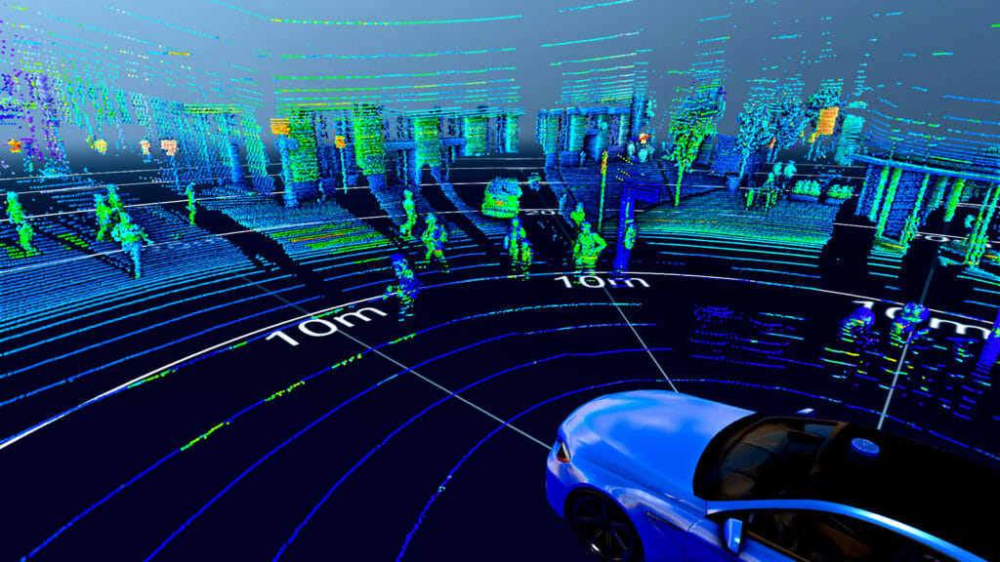

SLAM stands for Simultaneous Localization and Mapping. It's a technique used in robotics and autonomous systems to create maps of an unknown environment while simultaneously keeping track of the robot's location within that environment. Involves using LiDAR sensors to both perceive the surroundings and estimate the robot's position and orientation relative to those surroundings.
SLAM stands for Simultaneous Localization and Mapping. It's a technique used in robotics and autonomous systems to create maps of an unknown environment while simultaneously keeping track of the robot's location within that environment. Involves using LiDAR sensors to both perceive the surroundings and estimate the robot's position and orientation relative to those surroundings.
Our primary goal was to map the surrounding area for the user in 2D with accuracy and completeness. Employing LiDAR sensors, we aimed to create a detailed map depicting the layout of obstacles and features in the environment. Our focus was on providing the user with a clear visual representation of their surroundings to navigate effectively in two dimensions.
The second step of SLAM involves extracting meaningful features from the sensor data to facilitate the mapping and localization processes, enabling the robot or user to navigate and interact effectively with the environment.
We opted for the Slamtec A1M8 LiDAR due to its affordability and widespread recommendation, making it an ideal choice for college students. Its competitive pricing and positive reviews made it stand out as the most suitable option for our budget-conscious project needs. The Slamtec A1M8's combination of affordability and performance ensured that we could effectively implement SLAM technology in our academic endeavors without exceeding our financial constraints.
The last step of SLAM focuses on ensuring the reliability and consistency of the map and localization estimates, allowing the robot or user to navigate effectively and make informed decisions based on the environment's current state.
We seamlessly integrated all components to demonstrate live mapping, with the data being uploaded in real-time to our website. Users can now observe dynamic updates of the environment as it's mapped, providing an interactive and informative experience. This implementation enhances accessibility and enables users to remotely monitor and engage with the mapping process.